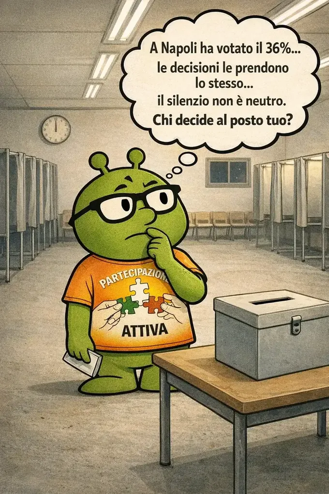

L'astensionismo in Italia non è apatia. È sfiducia accumulata. E ha un costo preciso.

Il 25 settembre 2022, il partito più votato d'Italia non era Fratelli d'Italia, non era il PD, non era il Movimento 5 Stelle.
Era il partito di chi non si è presentato alle urne.
L'affluenza si è attestata appena sotto al 64%, peggiorando di 9 punti il record negativo nella storia repubblicana. Significa che oltre 18 milioni di italiani aventi diritto al voto hanno scelto — o non hanno potuto scegliere — di restare a casa.
A Napoli il dato era ancora più netto: alle ore 19 aveva votato solo il 36,78% degli elettori del capoluogo campano. Meno di quattro persone su dieci.
Sarebbe comodo liquidare questi numeri come disinteresse, come pigrizia civica. I dati raccontano altro.
Quasi un italiano su due ritiene che non andare a votare sia una forma di protesta politica. Tra i ceti popolari, i due terzi considerano l'astensione una forma legittima di protesta. E tra chi si astiene, questa convinzione raggiunge il 75%.
L'astensionismo non è distribuito in modo uniforme: cresce tra i giovani, tra i redditi medio-bassi e nelle periferie urbane, dove la distanza dai centri decisionali è percepita come irrimediabile. Chi ha più bisogno di essere rappresentato è anche chi vota di meno. Non perché non gli importa. Ma perché non si sente ascoltato.
Il 25 settembre 2022 è stata la prima volta nella storia repubblicana che si è recato al voto meno del 70% degli elettori. Un anno dopo, alle europee del 2024, per la prima volta il Paese è sceso sotto il 50%, con un'affluenza del 48,3%.
Il problema non è estetico. Ogni voto mancante è uno spazio decisionale che qualcun altro occupa. Le politiche su salari, affitti, sanità, trasporti vengono scritte comunque — con o senza la partecipazione di chi quelle politiche le subisce direttamente.
In Campania ha votato solo il 53,29%, con un calo di oltre 10 punti rispetto al 2018. Eppure le tariffe RC auto più care d'Italia continuano a essere pagate al Sud, i pronto soccorso più sotto pressione sono quelli delle grandi città meridionali, le liste d'attesa più lunghe sono quelle delle regioni con meno risorse.
Non è una coincidenza. È il risultato di chi decide e chi no.
Noi non crediamo che la soluzione sia fare appelli al voto ogni cinque anni. Crediamo che la partecipazione si costruisca nel mezzo: seguendo le battaglie concrete, portando dati, presidiando i luoghi dove le decisioni vengono prese.
Per questo seguiamo da vicino il costo della RC auto che a Napoli supera i 597€ contro i 299€ di Enna. Per questo monitoriamo i tagli alla sanità pubblica e le liste d'attesa che durano anni. Per questo siamo stati alla Camera il 9 aprile per la proposta di legge SIRE.
La partecipazione non è solo un'urna ogni cinque anni. È sapere cosa succede, chiedersi perché, e non lasciare che altri decidano in silenzio.
Unisciti a Partecipazione Attiva. È gratuito, richiede 2 minuti e fa la differenza.
Iscriviti ora →